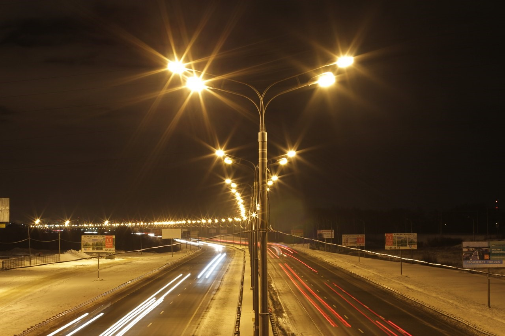
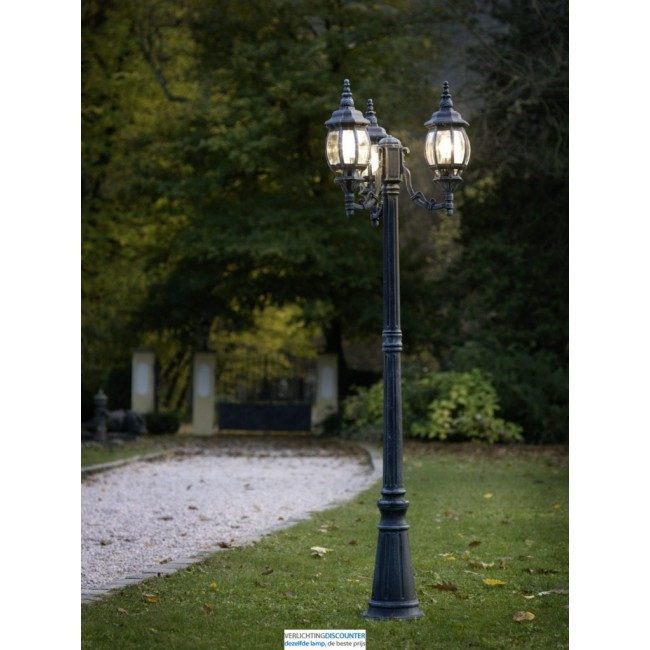
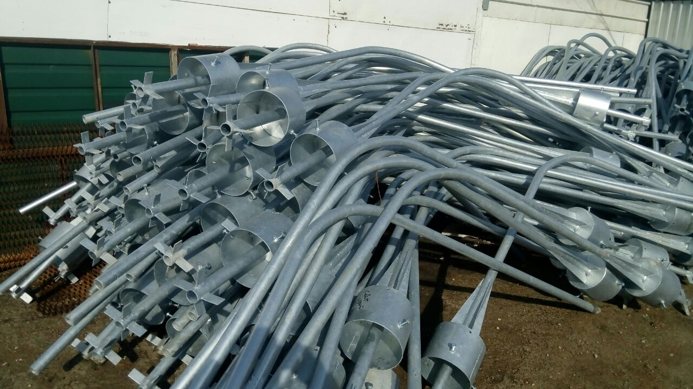
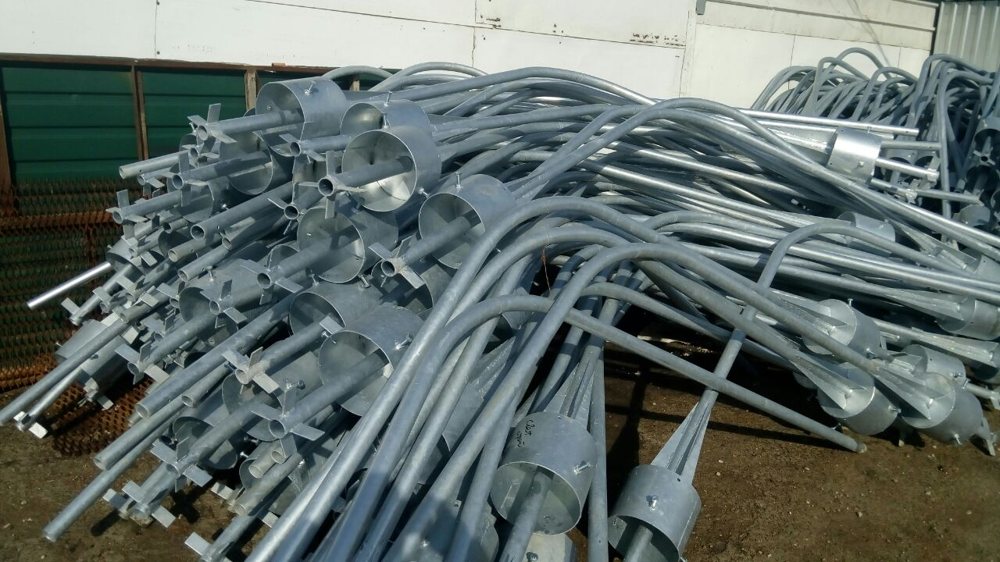
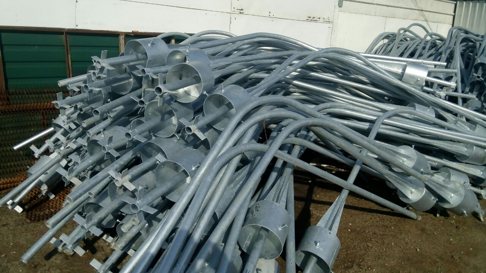

Ведущим направлением деятельности ООО «СВЕТСТРОЙ» является установка светотехнического оборудования для освещения улиц, проспектов,площадей. Компания выполняет архитектурную подсветку объектов, а также производит энергоснабжение жилых комплексов и промышленных сооружений, осуществляет строительство, монтаж и пусконаладочные работы блочных распределительных пунктов питания, телемеханического управления наружным освещением и автоматизированной системы коммерческого учета электроэнергии.
С целью оптимизации строительно-монтажных работ наша организация с октября 2016 г. организовала собственное производство металлоконструкций. Производственные мощности компании позволяют обеспечивать не только личные потребности в металлоконструкциях, но и ориентированы на изготовление больших объемов продукции различной сложности по техническим условиям и чертежам Заказчиков, с применением современных технологий на современном оборудовании. Сварщики компании имеют аттестацию и проходят ежегодное повышение квалификации.
Наша компания предлагает услуги плазменной резки металла любой сложности.
По желанию Заказчика металлоконструкции могут быть оцинкованы горячим способом, с предоставлением гарантии завода на покрытие (до 200 мкм), так же может осуществляться доставка материалов на склады и производственные площадки заказчика.
- Царицыно-Музей-Заповедник, установка около 2000 торшеров, архитектурная подсветка сооружений.
- Сколковская транспортная развязка внешняя сторона- 170 опор;
- Можайское шоссе - участок 30 км, до города Звенигорода- 900 опор;
- г. Одинцово- 1500 опор;
- г. Сергиев-Посад- 1250 опор, монтаж светодиодной иллюминации;
- Реконструкция Дмитровского шоссе - 350 опор;
- Реконструкция Каширского шоссе от МКАД до Варшавского шоссе- 300 опор, а так же монтаж автоматизированных систем управления освещением улиц и тоннелей;
- Жилой комплекс «Загорье»-120 опор;
- Жилой комплекс «Левобережный» - 220 опор;
- Около 50 государственных детских садов, школ и физкультурно-оздоровительных комплексов- 350 опор.
Среди крупных объектов, на которых силами нашей компании установлено и подключено наружное освещение:

* ООО «СВЕТСТРОЙ» имеет все необходимые лицензии и разрешения на производство строительно-монтажных работ, свидетельство СРО № РСО-С-275-7719424996 от 21.12.2015.
* Наша организация имеет аккредитацию на электронной площадке ЭТП «Стройторги» - Проведение торговых процедур для крупных коммерческих заказчиков.
* На всю предлагаемую к поставке и монтажу продукцию имеются сертификаты соответствия качества, копии которых могут быть предоставлены по требованию клиента.
Наши принципы работы основаны на гибкой ценовой, финансовой политике и индивидуальному подходу к каждому клиенту, что является залогом долгосрочных партнерских отношений с заказчиками.
НАДЕЕМСЯ НА ВЗАИМОВЫГОДНОЕ СОТРУДНИЧЕСТВО!


 

